システム工学部広報活動改善のための新入生アンケートを行っています．協力をお願いします．下記のページ（リンクになっています）からアンケートのページを開いてください．
| アンケートページの URL |
|---|
| http://sits.sys.wakayama-u.ac.jp/enquete/index.html |
第２回で，既に Netscape Mail を使ったメールの送受信を行っていますが，ここで改めてメールについて取り上げます．
コンピュータ（とネットワーク）を使ってコンピュータの利用者の間でメッセージの交換，すなわち手紙のやり取りを行うことができます．これをメール（電子メール，Eメール，e-mail） と言います．以降，メールのことを，単にメールと言う事にします．これはメッセージを書いたテキストファイルを相手に送りつける（相手のコンピュータにコピーする）メカニズムです．
手紙を出すには宛名と住所を書かなければならないのと同じように，メールを送る時もメッセージの宛先を指定する必要があります．この宛先をメールアドレスと言います．
みなさんも既にシステム情報学センターの利用承認書に書かれているメールアドレスを持っています．実際には以下の２つのメールアドレスを使えます．どちらを使うかは，メールの読み書きをするソフトウェアの設定に依存します．ここでは，この講義の第２回の Netscape の初期設定において E mail address として設定したシステム工学部のメールアドレス を使います．
| 所属 | メールアドレス | メールサーバー |
|---|---|---|
| システム工学部のメールアドレス | ユーザ名@sys.wakayama-u.ac.jp | mail.sys.wakayama-u.ac.jp |
| システム情報学センターのメールアドレス | ユーザ名@center.wakayama-u.ac.jp | mail.center.wakayama-u.ac.jp |
メールアドレスの "@"（アットマーク)より右側の部分 （sys.wakayama-u.ac.jp のところ）をドメイン名と言います．これは "@" より左側にある“利用者”の“住所”に相当します．jp:japan～日本の，ac:academic～学校関係の，wakayama-u～和歌山大学の，sys～システム工学部，の誰々，という具合になります．
Netscape Mail では，「受信トレイ」や「ごみ箱」の他に「下書き」や「送信済み」などのフォルダ（メールの置き場所）も自動的に作成されます．しかし演習室のシステムでは，それらが Netscape Mail の画面上に現れないことがあることがあるようです．アカウント名をマウスの右ボタンでクリックして現れるメニューから「購読」を選んで，「Draft」と「Sent」を購読するように設定した後，一旦 Netscape を終了してみてください．
もし，それでも「下書き」や「送信済み」が現れないようなら，以下の手順ですべてのフォルダを表示するようにしてみてください．まず，Netscape Mail の「編集」から，「Mail & Newsgroups アカウントの設定」を選んでください．
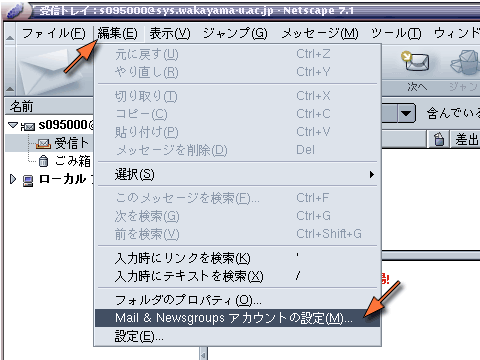
次に左側の枠の中から，「サーバ設定」を選んでください．
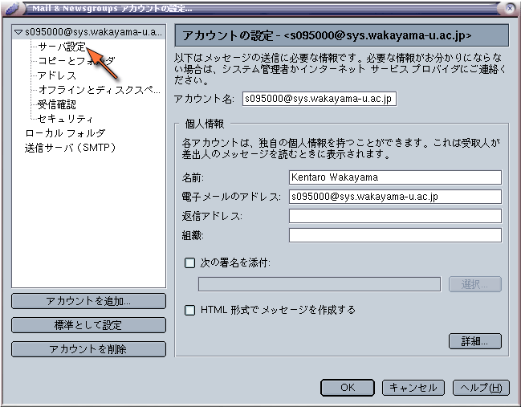
「サーバ設定」の中にある「詳細」のボタンをクリックしてください．
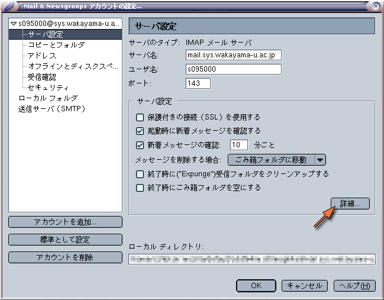
「詳細 IMAP サーバ設定」にある「購読フォルダのみを表示」に付いているチェックマークを消してください．
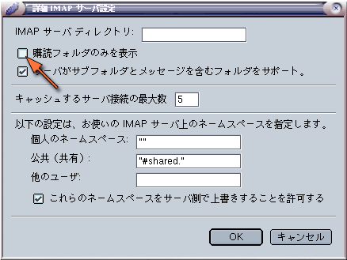
設定が終わったら OK をクリックして，設定のウィンドウを閉じてください．その後 Netscape を一旦終了してください．
ここのシステム（Linux 側）で使用できるメールを読み書きするためのソフトウェア（メールクライアント，メール・ユーザ・エージェント，メールソフト）には，以下のものがあります．
| メールの読み書きに使うソフトウェア | |
|---|---|
| mail/Mail | もっとも基本的なもの，コマンドで使用（演習室では使用できません） |
| Netscape Mail | Netscape Communicator に含まれるもの，ウィンドウで使用 |
| MH | 複数のコマンドで構成された高機能なもの |
| RMAIL | emacs に組み込まれたもの |
| mh-e | MH を emacs の中から使用するためのユーザインタフェース |
| mew | MH と互換性があり emacs の中で使えるもの |
| Wanderlust | mew と互換性があり IMAP にちゃんと対応しているもの |
| sylpheed | X Window System (GTK) に対応したもの |
このうち sylpheed は，日本人の手によって開発されているもので，Windows の Outlook Express に似た雰囲気を持っています．Windows 版もあります．また Wanderlust や Mew は，次回以降ずっと使用することになるテキストエディタの emacs の“中”で使用できるものです．
画面上部にある「プログラム」などから，「インターネット」「sylpheed」の順にメニューをたどってください．
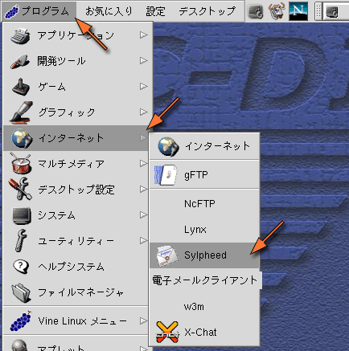
sylpheed を最初に起動したときは「新規アカウントの設定」のウィンドウが現れます．設定内容は Netscape Mail の時と同じです．「プロトコル」にはIMAP4を選んでください．
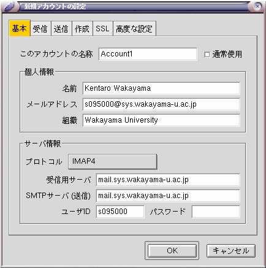
ワープロや表計算などの事務的な情報処理に使用されるソフトウェアのパッケージのことを，オフィススイートとかオフィスソフトなどと呼びます．Windows などでは Microsoft Office や一太郎などのジャストシステムのソフトウェアが有名ですが，これらには Linux 用の物が用意されていません（一太郎はそのうち出るかも）．Linux 上で使用できるオフィススイートには Hancom Office や StarSuite，それに オープンソースで開発されている KOffice などがありますが，ここでは KOffice 同様オープンソースで開発されている OpenOffice.org を取り上げます（StarSuite は OpenOffice.org の商用版です）．
OpenOffice.org には Windows 版もあります（Mac OS X 版もありますが，現時点では実用的ではないようです）．これは Microsoft Office との互換性を持っています．
まず，ターミナルを起動し，/usr/local/OpenOffice.org1.1.4/setup コマンドを実行してください．
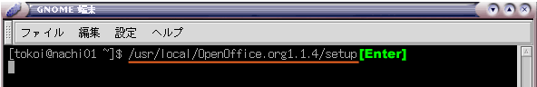
すると OpenOffice.org のセットアッププログラムが起動します．「次へ」をクリックしてください．
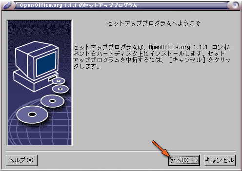
OpenOffice.org に関する追加情報が表示されます．一応目を通して「次へ」をクリックしてください．
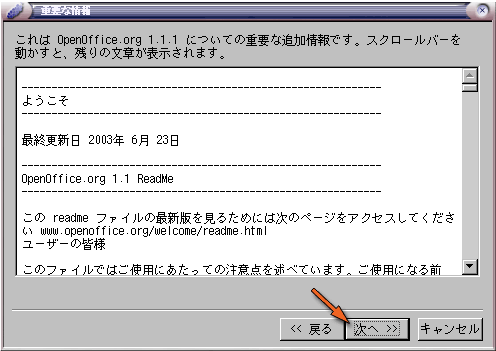
「ソフトウェアライセンス契約書」が表示されます．スクロールバーを下までドラッグするか「下へ」をクリックして，契約書を最後まで表示させてください．
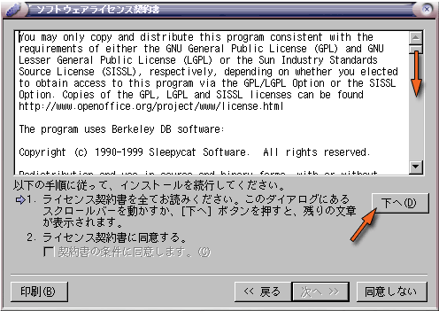
すると，「契約書の条件に同意します。」のチェックボックスが有効になりますから，そこをクリックした後，「次へ」をクリックしてください．
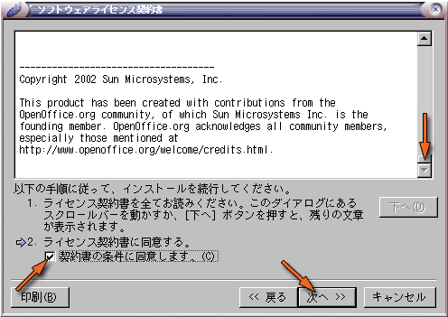
「ユーザーデータの入力」には何も入れなくても構いません．この内容は後に設定できます．「次へ」をクリックしてください．
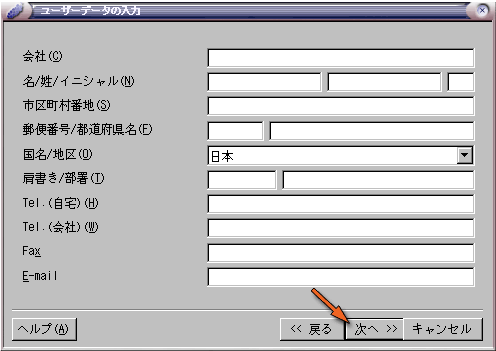
「インストールの種類」には「ワークステーションインストール」を選択してください．その後，「次へ」をクリックしてください．
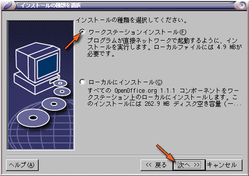
「インストールディレクトリ」は変更しないでください．そのまま「次へ」をクリックしてください．
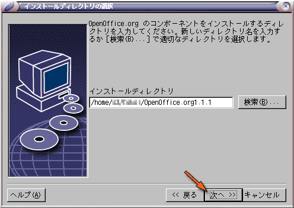
インストールするフォルダを作成するかどうかを聞いてきますので，「はい」をクリックしてください．
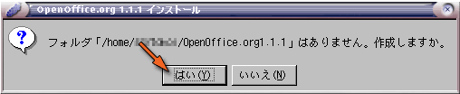
これからインストールを開始します．「インストールする」をクリックしてください．
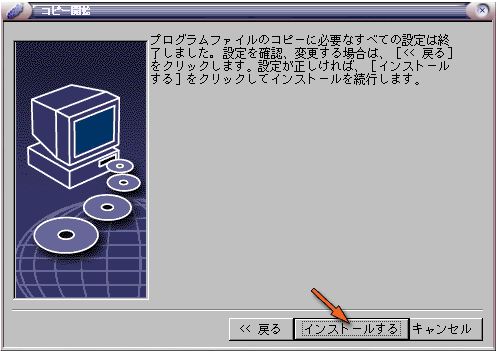
インストール途中に次のようなウィンドウが現れたら，「置換する」を選んでください．このウィンドウがたびたび現れてうっとうしい場合には，「すべて置換する」をクリックしてください．
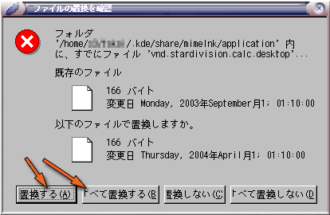
「インストールの完了」というウィンドウが現れたら，「完了」をクリックしてください．
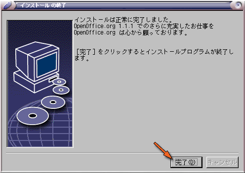
OpenOffice.org のインストールが完了すると，画面上部のパネルの「お気に入り」に，OpenOffice.org のメニューが追加されます．
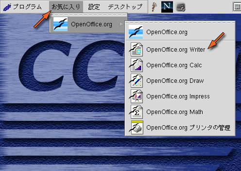
"Writer" はワープロソフトです．"Calc" は表計算ソフトです．"Draw" は作図ソフトです．"Impress" は Microsoft の PowerPoint のようなプレゼンテーション用のソフトです．"Math" は数式エディタです．論文を書くときには重宝します．
試しに，この中から "Writer" を選んでみてください．最初に OpenOffice.org を使用するときにだけユーザ登録のウィンドウが現れますが，ここでは「登録しない」を選んで「OK」をクリックしてください．
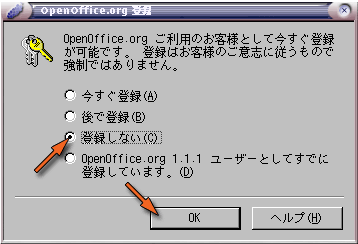
"Writer" の画面は，次のようなものです．文書の編集を行うウィンドウのほかに，「段落スタイル」と書かれた小さなウィンドウが開かれます．このウィンドウは画面上部にある「指」（だと思うんだけどな）の形をしたボタンで消したり表示したりできます．
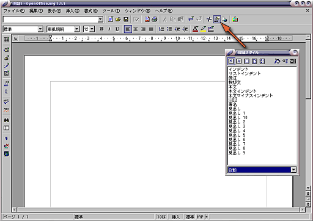
それでは，ここでレポートを書く場合について考えてみます．レポートの最初には題名と著者の名前を書きます．「段落スタイル」の一番下の欄（「自動」と表示されているところ）の右側にある「▼マーク」をクリックして，ポップアップメニューから「章のスタイル」を選んでください．
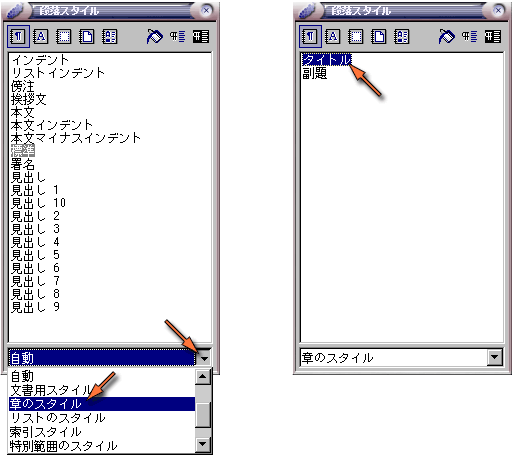
すると「タイトル」と「副題」という２つのスタイルが表示されるので，「タイトル」をダブルクリックしてください．文書のウィンドウのカーソル位置が用紙の中央に移動し，文字の大きさや自体がタイトル用のものに切り替わります．
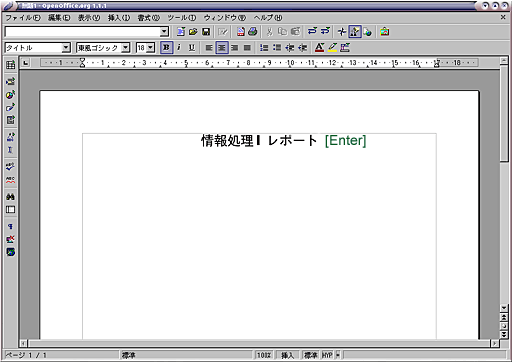
タイトルをタイプした後 [Enter] をタイプすれば改行します．このとき次の行のスタイルは，自動的に「副題」に切り替わります．
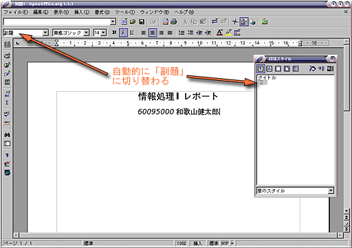
そのまま学籍番号と名前をタイプして，改行（[Enter] をタイプ）します．すると今度はカーソルが文書の左端に移動します．ここで再び「段落スタイル」の一番下の欄の▼マークをクリックして，今度は「使用したスタイル」を選んでください．スタイルが「本文」に切り替わっているはずです．
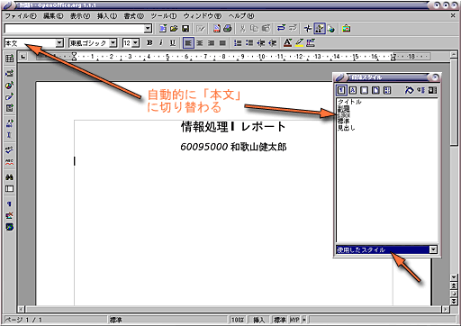
ここで，「段落スタイル」の一番下の欄から「自動」を選び，「見出し１」をダブルクリックしてから見出しを書いてみます．
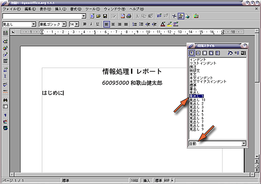
改行すると，スタイルは「本文」に戻ります．
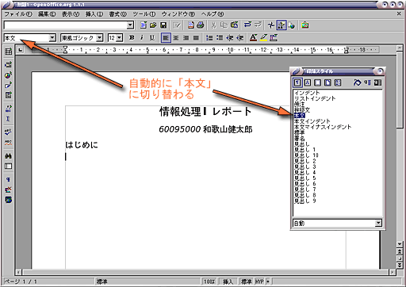
本文を書いてみます．「本文」のスタイルでは，改行すると段落の間に少し間隔が空きます．
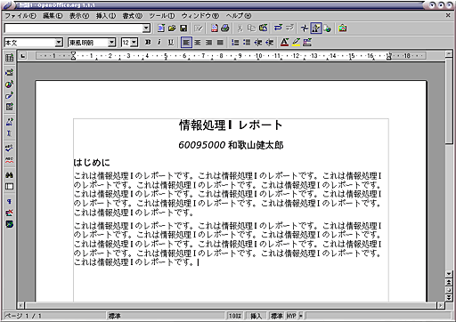
ここで，ウィンドウの上部にある「編集」メニューから，「スタイル」→「カタログ」の順にメニューを選んでください．
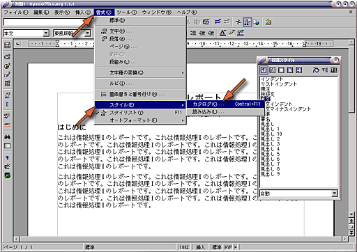
「スタイルのカタログ」ウィンドウで，「本文」が選ばれていることを確認して，「変更」をクリックしてください．
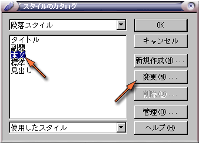
本文の体裁を，日本語の文章らしく最初の行を字下げするようにします．「インデントと間隔」のタブを選んで，「最初の行」の下にあるチェックボックスにチェックを入れてください（「最初の行の右側の欄に，字下げの長さを指定しても構いません）．また，行間も１．５行にしてみましょう．
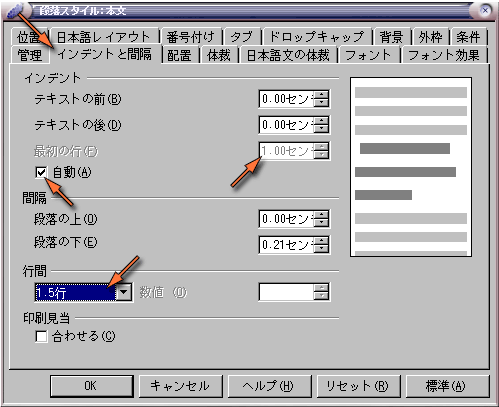
次に「配置」のタブを選び，「オプション」の中から「両端揃え」を選んでください．
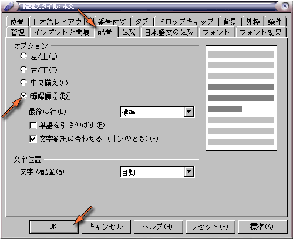
最後に「OK」をクリックすると，本文の体裁が全部変更されているはずです．
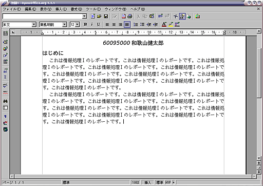
そうしたら新しい見出しを追加します．「見出し１」のスタイルをダブルクリックして，次の見出しを書いてください．そのあと，その見出しのところにカーソルを戻して置いてください．
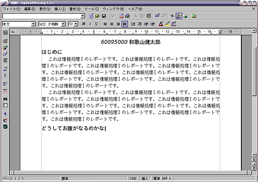
再び「スタイルのカタログ」ウィンドウを開いて「見出し１」が選択されていることを確認して，「変更」をクリックしてください．
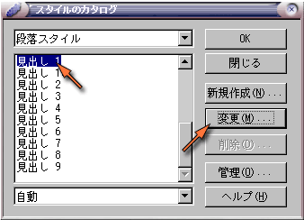
「番号付け」のタブを選んで，「番号付けスタイル」に「番号付け１」を指定してください．そのあと，「OK」をクリックしてください．
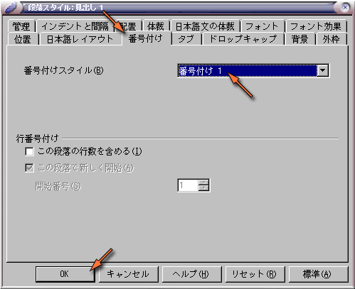
すると，見出しに番号が振られます．
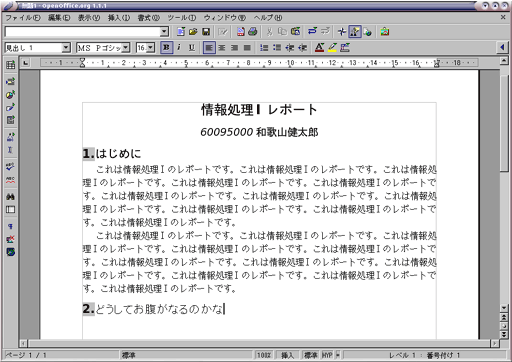
OpenOffice.org には，他にも様々な機能があります．詳しいことはウィンドウの上部にある「ヘルプ」を参照してください．
スタイルシートこのように，文書のスタイル（書式）に名前を付けて管理するものをスタイルシートと呼びます．スタイルシートは最近のワープロソフトの重要な機能であるほか，この考え方は Web ページのレイアウトにも導入されています（第６回）．スタイルの制御はスタイルシートを使用しなくても可能です．しかし，論文など長文の文書を作成する場合に局所的なスタイル指定を行ってしまうと，文書のレイアウトに統一感を持たせてスタイルを変更することが困難になります．
なお，この講義のほか，後に続く情報処理IIや情報処理IIIなどでは，このようなワープロソフトはまったく使用しません（だったら説明するなって）．その代わり，文書の作成には次回で解説する emacs を用います．この講義で扱う文書はプログラムのソースファイルや Web ページの HTML ファイルが中心になりますが，レポートや論文も第８回で解説する LaTeX を用いて作成することができます（３年次に配属される研究室によっては，卒業論文を LaTeX で作成することを義務付けているところもあります）．
Impress は Microsoft の PowerPoint に相当する，プレゼンテーション用のソフトウェアです．作成したスライドは Impress 上で再生できるほか，Web ページ，PDF (Portable Document Format) ファイル，それに Macromedia Flash 形式でも出力できます．「お気に入り」から Impress を起動してください．
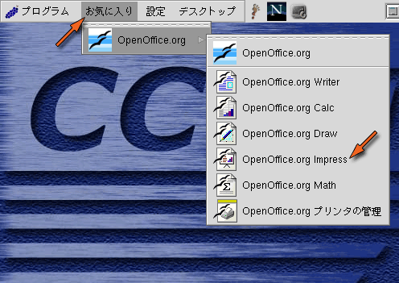
Impress の場合は，始めに「オートパイロットプレゼンテーション」が起動します．
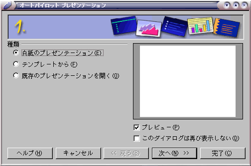
あらかじめ用意されたスライドのデザインを使ってスライドを作るなら「テンプレートから」を選択しますが，ここでは自分でデザインすることにして，「白紙のプレゼンテーション」を選んで「次へ」をクリックしてください．
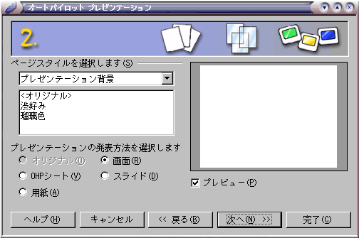
このまま「次へ」をクリックしてください．
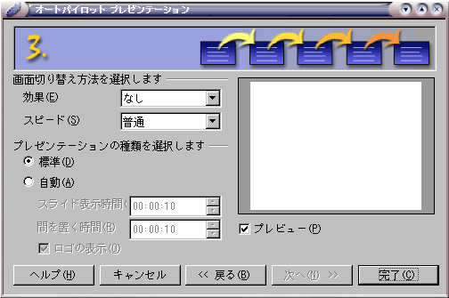
画面の切り替え効果や，切り替えの速度を選んで，最後に「完了」をクリックしてください．
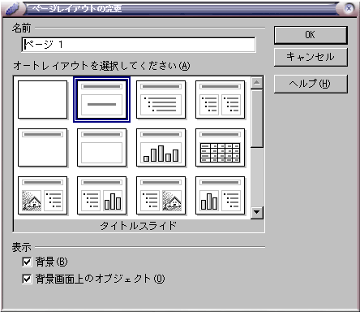
最初のページのレイアウトを選択します．このページは表紙なので，「タイトルスライド」のレイアウトを選択することにします．
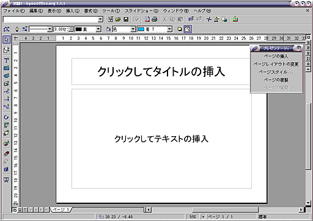
真っ白いページというのもなんなので，背景を変えてみることにします．すぺてのページで背景を共通にするために，「マスター」の背景を変更します．「表示」メニューから「マスター」を選んでください．
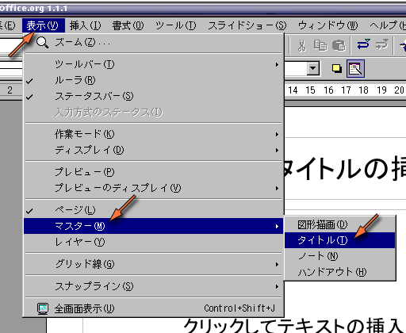
「書式」メニューから「スタイルとテンプレート」→「カタログ」という順に選び，「スタイルのカタログ」ウィンドウを開きます．
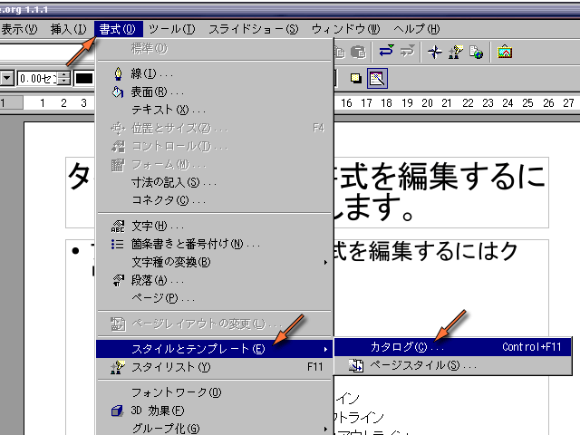
「スタイルのカタログ」から「背景」を選び，「変更」をクリックします．
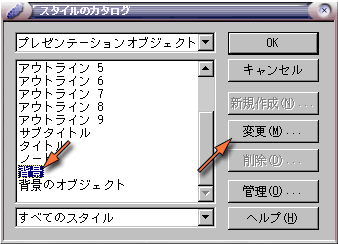
好きな「背景」を選びます．
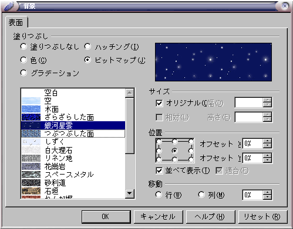
選んだ背景が設定されます．
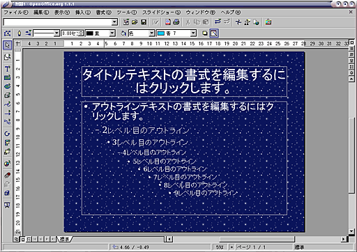
ウィンドウの左端には，文字や図形などを描くためのボタンが並んでいます．このいずれかを選ぶと，ウィンドウの上部にその色などの属性の設定が表示されます．
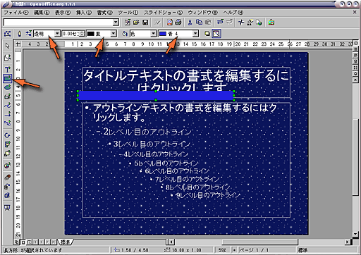
これらのボタンのうち，右上に「緑色の三角」があるものは，マウスのボタンをしばらく押しつつけていると，さらに選択肢が現れます．
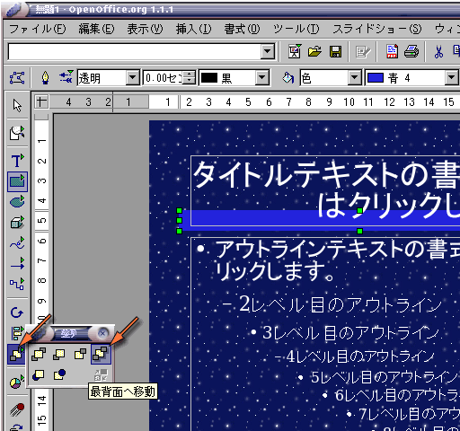
文字の字体（書体）などを変更するときは，「Ｔ」の形のボタンを選びます（文字枠をクリックすれば自動的に選択されます）．変更したい文字（枠）をマウスで選択してから，字体や文字サイズなどを選んでください．なお，「タイトルテキストの書式を編集するにはクリックします。」の文字は字体を表示するためのサンプルですので，文字そのものを変更しても意味はありません．
背景のレイアウトができたら，通常のページの編集に戻ります．「表示」メニューから「ページ」を選んでください．
通常のページの編集に戻ります．
通常のページにあるタイトルの枠とテキストの枠のそれぞれをクリックして，文字をタイプします．
次のページのレイアウトを選びます．既に，一番よく使われるアウトライン（箇条書き）のレイアウトが選択されていると思います．レイアウトを選んだら「OK」をクリックしてください．
選んだレイアウトで新しいページが作成されます．
アウトラインでは，[Tab] (タブ)キーを使って「レベル」を制御します．[Tab] をタイプすればレベルが下がり，[Shift] を押しながら [Tab] をタイプすればレベルが上がります．
作成した文書やスライドを保存するには，「ファイル」メニューから「保存する」を選ぶか，フロッピーディスクのアイコンをクリックしてください．
保存する文書やスライドに付けるファイル名を指定してください．このとき「ファイル名に拡張子を付ける」にチェックが入っていることを確認してください．もし，「パスワード付きで保存する」や「ファイル名に拡張子を付ける」が隠れていたら，このウィンドウを広げてください．
なお，保存した Impress のスライドは，次回 Impress を起動したときに「オートパイロット プレゼンテーション」で「既存のプレゼンテーションを開く」を選べば，もう一度開くことができます．
OpenOffice.org で作成した文書やスライドは，他のアプリケーションで使用できる形式でエクスポートできます．「ファイル」メニューから「エクスポート」を選んでください．
エクスポートする形式を選びます．Macromedia Flash 形式で保存するなら，"Macromedia Flash (SWF) (.swf)" を選んでください．
Impress で作ったスライドを Macromedia Flash 形式で出力すると，こういうものが得られます．また，Writer で作った文書を PDF (Portable Document Format) 形式で出力すると，こんなものが得られます．
OpenOffice.org を終了するには，「ファイル」メニューから「終了」を選んでください．